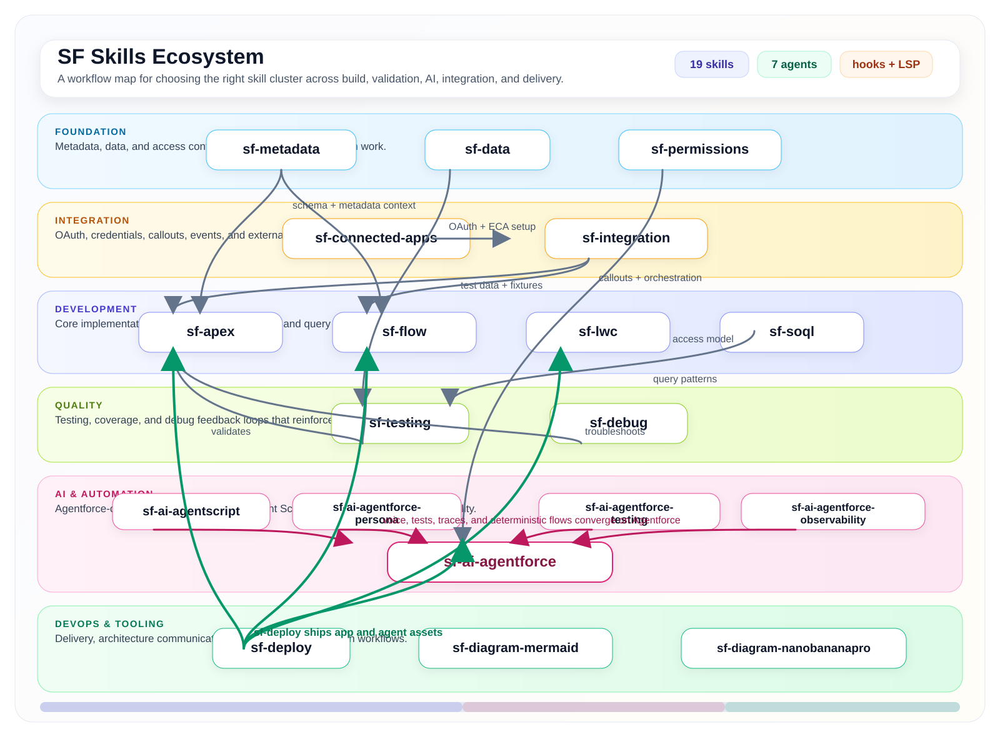

How to read the map
- Foundation gives you metadata, data, and access context.
- Integration handles OAuth, callouts, credentials, and event patterns.
- Development is where Apex, Flow, LWC, and SOQL implementation happens.
A premium, README-friendly companion visual for the sf-skills repository. Use it as a capability map:
foundation and integration support implementation, quality reinforces delivery, AI skills cluster around Agentforce,
and sf-deploy moves finished assets across environments.

The AI lane is intentionally built around sf-ai-agentforce. Agent Script, persona design, observability,
and test-spec workflows all sit around that hub, so the diagram treats it as the focal capability rather than just another node.
GitHub-native Mermaid is great for small graphs, but once labels and connections grow, GitHub scales the diagram down aggressively. A custom SVG keeps typography crisp, gives full control over spacing, and stays readable inside the README.